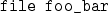

Next: 9.2 AVS/Express
Up: 9.1 AVS
Previous: 9.1.1 Writing AVS Modules
Contents
Index
9.1.2 Writing AVS Coroutines
Before continuing, see the note in § 3.4
on naming conventions.
Now suppose we want to create the coroutine ``foo bar''.
We then do the following:
- In file foo_bar.c, write the function FooBar
and a main routine.
Use the examples in the avs/modules directory as a guide.
- In Makefile, add foo_bar to the COROUTINES
string definition, and define a rule for compiling foo_bar
(use rotate_geom as an example).
- In ParFlow_source, add the line

- Type

This installs the coroutine in the directory
$PARFLOW_DIR/avs/mod_lib.
- Test the coroutine by using the pfavs script.
Next: 9.2 AVS/Express
Up: 9.1 AVS
Previous: 9.1.1 Writing AVS Modules
Contents
Index
Steve Smith
2008-06-02